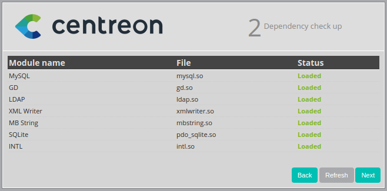
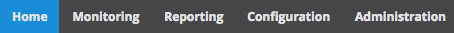
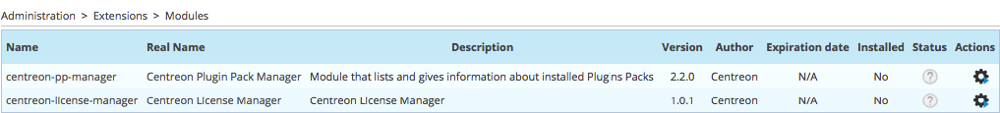
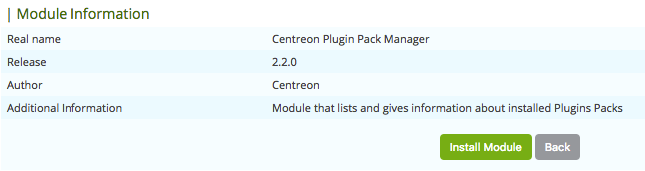
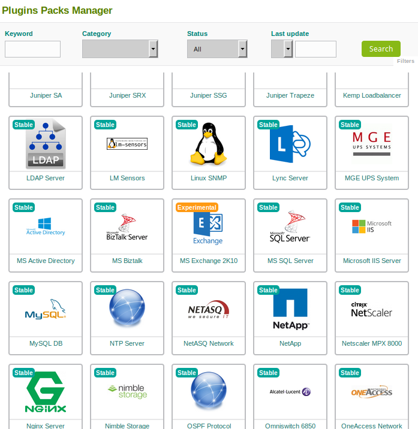

Using Centreon el6 ISO¶
Installation¶
Step 1 : Start¶
To install Centreon, start the server/virtual machine using the ISO file cited in the downloads section of the installation guide. Start with the Install or upgrade an existing system option
{kind=link}
Click on Next
{kind=link}
Step 2 : Choice of language¶
Choose your language and click on Next.
{kind=link}
Select the keyboard used by your system and click on Next.
{kind=link}
Step 3 : General configuration¶
Depending on the type of storage required, choose the options necessary to obtain the partitioning that suits you best.
{kind=link}
A warning message may appear
{kind=link}
Choose your hostname and click on Configure network in order to modify your network card configuration.
Select the network card that you want to use and go to the “IPv4 Settings” tab or the “IPv6 Settings” tab (depending on the requirements) to configure the IP addresses of the different interfaces. Click on Apply to save the changes.
{kind=link}
Click on Close and Next to continue.
Select your time zone and click on Next.
{kind=link}
Enter the desired root password, and click on Next.
Select the partitioning options that suit you best. Then validate.
{kind=link}
Step 4 : Component selection¶
Choose the server type¶
It is possible to choose from different options to answer the question: Which server type would you like to install?:
{kind=link}
- Central server with database : Install Centreon (web interface and database), monitoring engine and broker
- Central server without database : Install Centreon (web interface only), monitoring engine and broker
- Poller server : Install poller (monitoring engine and broker only)
- Database server : Install database server (use with Central server without database option)
In our box, we shall choose the Centreon Server with database option.
Once all these options have been selected, the installation starts.
{kind=link}
When the installation is finished, click on Restart.
{kind=link}
Configuration¶
Via the web interface¶
Log into web interface via : http://[SERVER_IP]/centreon. The End of installation wizard of Centreon is displayed, click on Next.

The End of installation wizard of Centreon checks the availability of the modules, click on Next.
{kind=link}
Click on Next.

Click on Next.

Define the data concerning the admin user, click on Next.

By default, the ‘localhost’ server is defined and the root password is empty. If you use a remote database server, these two data entries must be changed. In our box, we only need to define a password for the user accessing the Centreon databases, i.e. ‘Centreon’, click on Next.

If the following error message appears: Add innodb_file_per_table=1 in my.cnf file under the [mysqld] section and restart MySQL Server. Perform the following operation:
- Log-on to the ‘root’ user on your server
- Modify this file
/etc/my.cnf
- Add these lines to the file
[mysqld]
innodb_file_per_table=1
- Restart mysql service
service mysql restart
- Click on Refresh
The End of installation wizard configures the databases, click on Next.

The installation is finished, click on Finish.
At this stage, an ad informs you of the latest Centreon news/products . If your platform is connected to the Internet, you will receive the latest information. If not, the information of the current version will be displayed.

You can now log in.

Start monitoring¶
To start the monitoring engine :
- On the web interface, go to Configuration ==> Monitoring engines
- Leave the default options and click on Export
- Uncheck Generate Configuration Files and Run monitoring engine debug (-v)
- Check Move Export Files and Restart Monitoring Engine
- Click on Export again
- Log into the ‘root’ user on your server
- Start Centreon Broker
service cbd start
- Start Centreon Engine
service centengine start
- Start centcore
service centcore start
Monitoring is now working. You can start to monitor your IT !
Introduction to the web interface¶
Centreon web interface is made up of several menus, each menu has a specific function:
- The Home menu enables access to the first home screen after logging in. It summarises the general status of the supervision.
- The Monitoring menu contains the status of all the supervised elements in real and delayed time via the viewing of logs and performance graphics.
- The Reporting menu serves to view, intuitively (via diagrams), the evolution of the supervision on a given period.
- The Configuration menu serves to configure all monitored objects and the supervision infrastructure.
- The Administration menu serves to configure the Centreon web interface and to view the general status of the servers.
Before going further¶
it is necessary update the server. To do this:
- Log in as a ‘root’ on the central server
- Enter this command
yum -y update
Allow the update to run fully and then restart the server in case of a kernel update.
Easy monitoring configuration¶
Centreon is great in itself, highly versatile and can be configured to fit the very specifics of your monitored infrastructure. However you might find it useful to use Centreon IMP to get you started in minutes. Centreon IMP provides you Plugin Packs which are bundled configuration templates that highly reduce the time needed to properly monitor the most common services of your network.
Centreon IMP needs the technical components: Centreon License Manager and Centreon Plugin Pack Manager to work.
Install packages¶
When using Centreon ISO, the installation of Centreon Plugin Pack Manager is very easy. You’ll see that Centreon License Manager will be installed too as a dependency.
$ yum install centreon-pp-manager
Web install¶
Once the packages are installed, you need to enable the module in Centreon. So go to the Administration -> Extensions -> Modules page.
Install Centreon License Manager (dependency of Centreon Plugin Pack Manager) first.

Then install Centreon Plugin Pack Manager itself.
You’re now ready to go to Configuration -> Plugin packs -> Manager. You’ll find there 10 free Plugin Packs to get you started. 5 more are available after free registration and 150+ if you subscribe to the IMP offer (more information on our website).
You can continue to configure your monitoring with Centreon IMP by following this guide.